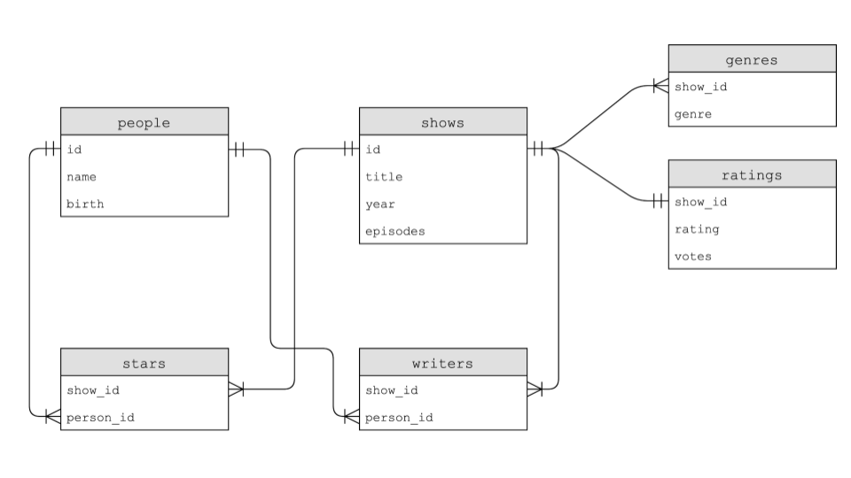

Week 7
SQL: Tabelas, Tipos, Declarações, Restrições, Índices, Palavras-chave, Funções, Transações, Condições de corrida, Ataques de Injeção SQL.
- Shorts
- Lab 7
- Problem Set 7
Notas
Lecture 7
- Bem-vindo!
- Banco de Dados de Arquivo Único
- Bancos de Dados Relacionais
- IMDb
JOINs- Índices
- Usando SQL em Python
- Condições de Corrida
- Ataques de Injeção SQL
- Resumindo
Bem-vindo!
- Nas semanas anteriores, apresentamos a você o Python, uma linguagem de programação de alto nível que utiliza os mesmos blocos de construção que aprendemos em C.
- Esta semana, continuaremos com mais sintaxe relacionada ao Python.
- Além disso, integraremos esse conhecimento aos dados.
- Finalmente, discutiremos o SQL ou Structured Query Language.
- Em geral, um dos objetivos deste curso é aprender a programar de forma geral - não apenas como programar nas linguagens descritas neste curso.
Banco de Dados de Arquivo Único
- Como você provavelmente já viu antes, os dados podem ser descritos em padrões de colunas e tabelas.
- Planilhas como as criadas no Microsoft Excel e no Google Sheets podem ser exportadas para um arquivo
csvou comma-separated values. - Se você olhar para um arquivo
csv, notará que o arquivo é plano no sentido de que todos os nossos dados são armazenados em uma única tabela representada por um arquivo de texto. Chamamos essa forma de dados de um banco de dados de arquivo único. - O Python vem com suporte nativo para arquivos
csv. -
Na janela do terminal, digite
code favorites.pye escreva o código da seguinte forma:# Prints all favorites in CSV using csv.reader import csv # Open CSV file with open("favorites.csv", "r") as file: # Create reader reader = csv.reader(file) # Skip header row next(reader) # Iterate over CSV file, printing each favorite for row in reader: print(row[1])Observe que a biblioteca
csvé importada. Além disso, criamos umreaderque armazenará o resultado decsv.reader(file). A funçãocsv.readerlê cada linha do arquivo e em nosso código armazenamos os resultados emreader.print(row[1]), portanto, imprimirá o idioma do arquivofavorites.csv. -
Você pode melhorar seu código da seguinte forma:
# Stores favorite in a variable import csv # Open CSV file with open("favorites.csv", "r") as file: # Create reader reader = csv.reader(file) # Skip header row next(reader) # Iterate over CSV file, printing each favorite for row in reader: favorite = row[1] print(favorite)Observe que a palavra
favoriteé armazenada e depois impressa. Observe também que usamos a funçãonextpara pular para a próxima linha do nosso leitor. -
O Python também permite que você indexe pelas chaves de uma lista. Modifique seu código da seguinte forma:
# Prints all favorites in CSV using csv.DictReader import csv # Open CSV file with open("favorites.csv", "r") as file: # Create DictReader reader = csv.DictReader(file) # Iterate over CSV file, printing each favorite for row in reader: print(row["language"])Observe que este exemplo utiliza diretamente a chave
languagena instrução de impressão. -
Para contar o número de linguagens favoritas expressas no arquivo
csv, podemos fazer o seguinte:# Counts favorites using variables import csv # Open CSV file with open("favorites.csv", "r") as file: # Create DictReader reader = csv.DictReader(file) # Counts scratch, c, python = 0, 0, 0 # Iterate over CSV file, counting favorites for row in reader: favorite = row["language"] if favorite == "Scratch": scratch += 1 elif favorite == "C": c += 1 elif favorite == "Python": python += 1 # Print counts print(f"Scratch: {scratch}") print(f"C: {c}") print(f"Python: {python}")Observe que cada linguagem é contada usando declarações
if. -
O Python nos permite usar um dicionário para contar os
contadoresde cada linguagem. Considere a seguinte melhoria em nosso código:# Counts favorites using dictionary import csv # Open CSV file with open("favorites.csv", "r") as file: # Create DictReader reader = csv.DictReader(file) # Counts counts = {} # Iterate over CSV file, counting favorites for row in reader: favorite = row["language"] if favorite in counts: counts[favorite] += 1 else: counts[favorite] = 1 # Print counts for favorite in counts: print(f"{favorite}: {counts[favorite]}")Observe que o valor em
countscom a chavefavoriteé incrementado quando já existe. Se não existir, definimoscounts[favorite]e o configuramos como 1. Além disso, a string formatada foi melhorada para apresentarcounts[favorite]. -
O Python também permite ordenar
counts. Melhore seu código da seguinte forma:# Sorts favorites by key import csv # Open CSV file with open("favorites.csv", "r") as file: # Create DictReader reader = csv.DictReader(file) # Counts counts = {} # Iterate over CSV file, counting favorites for row in reader: favorite = row["language"] if favorite in counts: counts[favorite] += 1 else: counts[favorite] = 1 # Print counts for favorite in sorted(counts): print(f"{favorite}: {counts[favorite]}")Observe o
sorted(counts)no final do código. -
Se você olhar os parâmetros da função
sortedna documentação do Python, você verá que ela tem muitos parâmetros incorporados. Você pode aproveitar alguns desses parâmetros incorporados da seguinte forma:# Sorts favorites by value import csv # Open CSV file with open("favorites.csv", "r") as file: # Create DictReader reader = csv.DictReader(file) # Counts counts = {} # Iterate over CSV file, counting favorites for row in reader: favorite = row["language"] if favorite in counts: counts[favorite] += 1 else: counts[favorite] = 1 def get_value(language): return counts[language] # Print counts for favorite in sorted(counts, key=get_value, reverse=True): print(f"{favorite}: {counts[favorite]}")Observe que uma função chamada
get_valueé criada e que a própria função é passada como argumento para a funçãosorted. O argumentokeypermite que você informe ao Python o método que deseja usar para ordenar os itens. -
O Python tem uma capacidade única que ainda não vimos: ele permite a utilização de funções anônimas ou
lambda. Essas funções podem ser utilizadas quando você não quer se preocupar em criar uma função completamente diferente. Observe a seguinte modificação:# Sorts favorites by value using lambda function import csv # Open CSV file with open("favorites.csv", "r") as file: # Create DictReader reader = csv.DictReader(file) # Counts counts = {} # Iterate over CSV file, counting favorites for row in reader: favorite = row["language"] if favorite in counts: counts[favorite] += 1 else: counts[favorite] = 1 # Print counts for favorite in sorted(counts, key=lambda language: counts[language], reverse=True): print(f"{favorite}: {counts[favorite]}")Observe que a função
get_valuefoi removida. Em vez disso,lambda language: counts[language]faz em uma linha o que nossa função de duas linhas anterior fazia. -
Podemos alterar a coluna que estamos examinando, focando em nosso problema favorito:
# Favorite problem instead of favorite language import csv # Open CSV file with open("favorites.csv", "r") as file: # Create DictReader reader = csv.DictReader(file) # Counts counts = {} # Iterate over CSV file, counting favorites for row in reader: favorite = row["problem"] if favorite in counts: counts[favorite] += 1 else: counts[favorite] = 1 # Print counts for favorite in sorted(counts, key=lambda problem: counts[problem], reverse=True): print(f"{favorite}: {counts[favorite]}")Observe que
problemsubstituiulanguage. -
E se quisermos permitir que os usuários forneçam entrada diretamente no terminal? Podemos modificar nosso código, aproveitando nosso conhecimento anterior sobre entrada do usuário:
# Favorite problem instead of favorite language import csv # Open CSV file with open("favorites.csv", "r") as file: # Create DictReader reader = csv.DictReader(file) # Counts counts = {} # Iterate over CSV file, counting favorites for row in reader: favorite = row["problem"] if favorite in counts: counts[favorite] += 1 else: counts[favorite] = 1 # Print count favorite = input("Favorite: ") if favorite in counts: print(f"{favorite}: {counts[favorite]}")Observe como nosso código é compacto em comparação com nossa experiência em C.
Bancos de Dados Relacionais
- Google, Twitter e Meta usam todos bancos de dados relacionais para armazenar suas informações em grande escala.
- Bancos de dados relacionais armazenam dados em linhas e colunas em estruturas chamadas de tabelas.
-
O SQL permite quatro tipos de comandos:
Create Read Update Delete - Essas quatro operações são carinhosamente chamadas de CRUD.
- Podemos criar um banco de dados SQL no terminal digitando
sqlite3 favorites.db. Ao ser solicitado, concordaremos em criarfavorites.dbpressionandoy. - Você notará um prompt diferente, pois agora estamos dentro de um programa chamado
sqlite3. - Podemos colocar o
sqlite3no modocsvdigitando.mode csv. Em seguida, podemos importar nossos dados do arquivocsvdigitando.import favorites.csv favorites. Parece que nada aconteceu! - Podemos digitar
.schemapara ver a estrutura do banco de dados. - Você pode ler itens de uma tabela usando a sintaxe
SELECT colunas FROM tabela. - Por exemplo, você pode digitar
SELECT * FROM favorites;, que iterará cada linha emfavorites. - Você pode obter um subconjunto dos dados usando o comando
SELECT language FROM favorites;. -
O SQL suporta muitos comandos para acessar dados, incluindo:
AVG COUNT DISTINCT LOWER MAX MIN UPPER -
Por exemplo, você pode digitar
SELECT COUNT(language) FROM favorites;. Além disso, você pode digitarSELECT DISTINCT(language) FROM favorites;para obter uma lista das linguagens individuais dentro do banco de dados. Você também poderia digitarSELECT COUNT(DISTINCT(language)) FROM favorites;para obter uma contagem dessas linguagens.# Searches database popularity of a problem import csv from cs50 import SQL # Open database db = SQL("sqlite:///favorites.db") # Prompt user for favorite favorite = input("Favorite: ") # Search for title rows = db.execute("SELECT COUNT(*) FROM favorites WHERE problem LIKE ?", "%" + favorite + "%") # Get first (and only) row row = rows[0] # Print popularity print(row["COUNT(*)"]) -
O SQL oferece comandos adicionais que podemos utilizar em nossas consultas:
WHERE -- adding a Boolean expression to filter our data LIKE -- filtering responses more loosely ORDER BY -- ordering responses LIMIT -- limiting the number of responses GROUP BY -- grouping responses togetherObserve que usamos
--para escrever um comentário em SQL. - Por exemplo, podemos executar
SELECT COUNT(*) FROM favorites WHERE language = 'C';. Um contador é apresentado. - Além disso, poderíamos digitar
SELECT COUNT(*) FROM favorites WHERE language = 'C' AND problem = 'Mario';. Observe como oANDé utilizado para estreitar nossos resultados. - Da mesma forma, poderíamos executar
SELECT language, COUNT(*) FROM favorites GROUP BY language;. Isso ofereceria uma tabela temporária que mostraria a linguagem e a contagem. - Podemos melhorar isso digitando
SELECT language, COUNT(*) FROM favorites GROUP BY language ORDER BY COUNT(*);. Isso ordenará a tabela resultante pelocount. - Também podemos
INSERTem um banco de dados SQL utilizando o formatoINSERT INTO table (column...) VALUES(value, ...);. - Podemos executar
INSERT INTO favorites (language, problem) VALUES ('SQL', 'Fiftyville');. - Também podemos utilizar o comando
UPDATEpara atualizar seus dados. - Por exemplo, você pode executar
UPDATE favorites SET language = 'C++' WHERE language = 'C';. Isso resultará na sobrescrita de todas as declarações anteriores em que C era a linguagem de programação favorita. - Observe que essas consultas têm um poder imenso. Consequentemente, em um ambiente de mundo real, você deve considerar quem tem permissões para executar determinados comandos.
DELETEpermite que você exclua partes de seus dados. Por exemplo, você poderiaDELETE FROM favorites WHERE problem = 'Tideman';.
IMDb
-
O IMDb oferece um banco de dados de pessoas, programas de TV, escritores, estrelas, gêneros e classificações. Cada uma dessas tabelas está relacionada entre si da seguinte forma:

- Após baixar o arquivo
shows.db, você pode executarsqlite3 shows.dbna sua janela do terminal. - Ao executar o comando
.schema, você encontrará não apenas cada uma das tabelas, mas também os campos individuais dentro de cada uma dessas tabelas. - Como você pode ver na imagem acima, a tabela
showstem um campoid. A tabelagenrestem um camposhow_idque tem dados em comum com a tabelashows. - Como você também pode ver na imagem acima, o campo
show_idexiste em todas as tabelas. Na tabelashows, ele é simplesmente chamado deid. Esse campo comum entre todos os campos é chamado de chave. Chaves primárias são usadas para identificar um registro único em uma tabela. Chaves estrangeiras são usadas para criar relacionamentos entre tabelas apontando para a chave primária em outra tabela. - Ao armazenar dados em um banco de dados relacional, como acima, os dados podem ser armazenados de forma mais eficiente.
-
No sqlite, temos cinco tipos de dados, incluindo:
BLOB -- binary large objects that are groups of ones and zeros INTEGER -- an integer NUMERIC -- for numbers that are formatted specially like dates REAL -- like a float TEXT -- for strings and the like -
Além disso, colunas podem ser configuradas para adicionar restrições especiais:
NOT NULL UNIQUE - Para ilustrar ainda mais a relação entre essas tabelas, poderíamos executar o seguinte comando:
SELECT * FROM people LIMIT 10;. Examinando a saída, poderíamos executarSELECT * FROM shows LIMIT 10;. Além disso, poderíamos executarSELECT * FROM stars LIMIT 10;.show_idé uma chave estrangeira nessa última consulta porqueshow_idcorresponde ao campo únicoidemshows.person_idcorresponde ao campo únicoidna colunapeople. - Podemos explorar ainda mais esses dados para entender essas relações. Execute
SELECT * FROM genres;. Há muitos gêneros! - Podemos reduzir ainda mais esses dados executando
SELECT * FROM genres WHERE genre = 'Comedy' LIMIT 10;. A partir dessa consulta, você pode ver que há 10 programas apresentados. - Você pode descobrir quais programas são esses executando
SELECT * FROM shows WHERE id = 626124; - Podemos aprimorar ainda mais nossa consulta para ser mais eficiente executando:
SELECT title FROM shows WHERE id IN ( SELECT * FROM genres WHERE genre = 'Comedy' ) LIMIT 10;Observe que esta consulta aninha duas consultas. Uma consulta interna é usada por uma consulta externa.
- Podemos refinar ainda mais executando
SELECT title FROM shows WHERE id IN ( SELECT * FROM genres WHERE genre = 'Comedy' ) ORDER BY title LIMIT 10; -
E se você quisesse encontrar todos os programas em que Steve Carell estrela no IMDb? Você poderia executar
SELECT * FROM people WHERE name = 'Steve Carell';Você encontraria oidindividual dele. Você poderia utilizar esseidpara localizar muitosprogramasem que ele aparece. No entanto, seria tedioso tentar isso um por um. Como poderíamos aninhar nossas consultas para tornar isso mais simplificado? Considere o seguinte:SELECT title FROM shows WHERE id IN (SELECT show_id FROM stars WHERE person_id = (SELECT * FROM people WHERE name = 'Steve Carell'));Observe que esta consulta longa resultará em um resultado final que é útil para descobrir a resposta à nossa pergunta.
JOINs
-
Considere as seguintes duas tabelas:

- Como poderíamos combinar tabelas temporariamente? As tabelas poderiam ser unidas usando o comando
JOIN. -
Execute o seguinte comando:
SELECT * FROM shows JOIN ratings ON shows.id = ratings.show_id WHERE title = 'The Office'; - Agora você pode ver todos os programas que foram chamados de The Office.
-
Você também pode aplicar o
JOINà nossa consulta do Steve Carell acima executando o seguinte:SELECT title FROM people JOIN stars ON people.id = stars.person_id JOIN shows ON stars.show_id = shows.id WHERE name = `Steve Carell`;Observe como cada comando
JOINnos informa quais colunas estão alinhadas com quais outras colunas. -
Isso poderia ser implementado de forma semelhante da seguinte maneira:
SELECT title FROM people, stars, shows WHERE people.id = stars.person_id AND stars.show_id = shows.id AND name = 'Steve Carell';Observe que isso alcança os mesmos resultados.
- O operador curinga
%pode ser usado para encontrar todas as pessoas cujos nomes começam comSteve C, pode-se empregar a sintaxeSELECT * FROM people WHERE name LIKE 'Steve C%';.
Índices
- Embora bancos de dados relacionais tenham a capacidade de serem mais rápidos e robustos do que utilizar um arquivo
CSV, os dados podem ser otimizados dentro de uma tabela usando índices. - Índices podem ser utilizados para acelerar nossas consultas.
- Podemos acompanhar a velocidade de nossas consultas executando
.timer onemsqlite3. - Para entender como índices podem acelerar nossas consultas, execute o seguinte:
SELECT * FROM shows WHERE title = 'The Office';Observe o tempo que é exibido após a execução da consulta. - Então, podemos criar um índice com a sintaxe
CREATE INDEX title_index on shows (title);. Isso diz aosqlite3para criar um índice e realizar algumas otimizações especiais relacionadas a essa colunatitle. -
Isso criará uma estrutura de dados chamada de B Tree, uma estrutura de dados que se parece com uma árvore binária. No entanto, ao contrário de uma árvore binária, pode haver mais de dois nós filhos.

- Executando a consulta
SELECT * FROM shows WHERE title = 'The Office';, você perceberá que a consulta é executada muito mais rapidamente! - Infelizmente, indexar todas as colunas resultaria na utilização de mais espaço de armazenamento. Portanto, há uma troca entre velocidade aprimorada e espaço de armazenamento.
Usando SQL em Python
-
Para auxiliar no trabalho com SQL neste curso, a Biblioteca CS50 pode ser utilizada em seu código da seguinte maneira:
from cs50 import SQL - Semelhante aos usos anteriores da Biblioteca CS50, esta biblioteca auxiliará nos passos complicados de utilização do SQL dentro do seu código Python.
- Você pode ler mais sobre a funcionalidade SQL da Biblioteca CS50 na documentação.
-
Lembre-se de onde paramos em
favorites.py. Seu código deve aparecer da seguinte forma:# Favorite problem instead of favorite language import csv # Open CSV file with open("favorites.csv", "r") as file: # Create DictReader reader = csv.DictReader(file) # Counts counts = {} # Iterate over CSV file, counting favorites for row in reader: favorite = row["problem"] if favorite in counts: counts[favorite] += 1 else: counts[favorite] = 1 # Print count favorite = input("Favorite: ") if favorite in counts: print(f"{favorite}: {counts[favorite]}") -
Modifique seu código da seguinte forma:
# Searches database popularity of a problem import csv from cs50 import SQL # Open database db = SQL("sqlite:///favorites.db") # Prompt user for favorite favorite = input("Favorite: ") # Search for title rows = db.execute("SELECT COUNT(*) FROM favorites WHERE problem LIKE ?", "%" + favorite + "%") # Get first (and only) row row = rows[0] # Print popularity print(row["COUNT(*)"])Observe que
db = SQL("sqlite:///favorites.db")fornece ao Python a localização do arquivo de banco de dados. Em seguida, a linha que começa comrowsexecuta comandos SQL utilizandodb.execute. De fato, esse comando passa a sintaxe dentro das aspas para a funçãodb.execute. Podemos emitir qualquer comando SQL usando essa sintaxe. Além disso, observe querowsé retornado como uma lista de dicionários. Nesse caso, há apenas um resultado, uma linha, retornada para a lista de linhas como um dicionário.
Condições de corrida
- O uso do SQL às vezes pode resultar em alguns problemas.
- Você pode imaginar um caso em que vários usuários possam estar acessando o mesmo banco de dados e executando comandos ao mesmo tempo.
- Isso poderia resultar em problemas em que o código é interrompido pelas ações de outras pessoas. Isso pode resultar em perda de dados.
- Recursos SQL embutidos, como
BEGIN TRANSACTION,COMMITeROLLBACK, ajudam a evitar alguns desses problemas de condição de corrida.
Ataques de Injeção de SQL
- Ainda considerando o código acima, você pode estar se perguntando o que os sinais de interrogação (
?) fazem acima. Um dos problemas que podem surgir em aplicações do mundo real de SQL é o que é chamado de ataque de injeção. Um ataque de injeção é quando um ator mal-intencionado pode inserir código SQL malicioso. -
Por exemplo, considere uma tela de login como a seguinte:

-
Sem as devidas proteções em nosso próprio código, um ator mal-intencionado pode executar código malicioso. Considere o seguinte:
rows = db.execute("SELECT COUNT(*) FROM favorites WHERE problem LIKE ?", "%" + favorite + "%")Observe que, como o caractere
?está em vigor, a validação pode ser executada emfavoriteantes que ele seja cegamente aceito pela consulta. - Você nunca deve utilizar strings formatadas em consultas como acima ou confiar cegamente na entrada do usuário.
- Ao utilizar a Biblioteca CS50, a biblioteca irá sanitizar e remover quaisquer caracteres potencialmente maliciosos.
Resumindo
Nesta lição, você aprendeu mais sobre a sintaxe relacionada ao Python. Além disso, aprendeu como integrar esse conhecimento com dados na forma de bancos de dados flat-file e relacionais. Finalmente, aprendeu sobre SQL. Especificamente, discutimos...
- Bancos de dados flat-file
- Bancos de dados relacionais
- SQL
JOINs- Índices
- Usando SQL em Python
- Condições de corrida
- Ataques de injeção de SQL
Até a próxima!